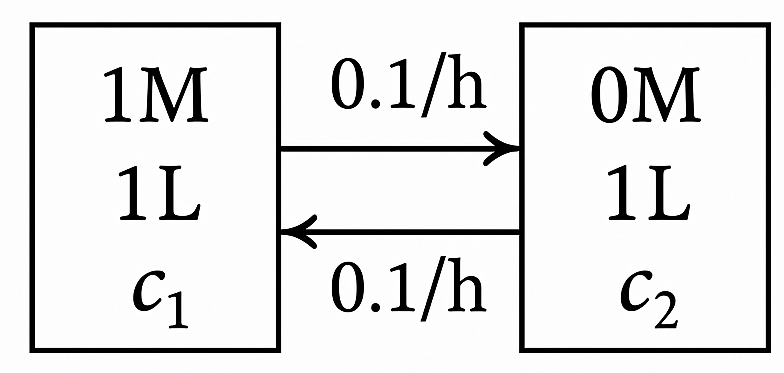

6.3. Homogeneous linear first-order ODEs with constant coefficients#
Systems of homogeneous linear first-order ODEs with constant coefficients can be written in the form:
Let’s guess a solution of the form:
Substituting in the ODE:
We find that our solution must satisfy an eigenvalue problem! \(\lambda\) is an eigenvalue and x is an eigenvector of A. We know an n x n matrix has n eigenvalues. Let’s suppose the corresponding eigenvectors are all linearly independent. What do we do?
In practice, this means that
(There are some cases this fails, but we will not cover them.) To apply the initial condition \(\vv{y}(0) = \vv{y}_0\), substitute and rewrite as a linear system:
where \(\vv{X} = [\vv{x}_1 \cdots \vv{x}_n]\) is the matrix whose columns are the eigenvectors of A and c is the column vector of unknown coefficients.
Example: Reaction network (again)
We previously analyzed the concentration of three species (A, B, and C) undergoing a sequence of first-order reactions, \(A \to B \to C\), where the first reaction has rate constant \(k_1\) and the second reaction has rate constant \(k_2\). It gave rise to a system of first-order ODEs:
where
Solve again using eigenvalues and eigenvectors.
A is lower triangular, so its eigenvalues are: \(\lambda_1 = -k_1\) \(\lambda_2 = -k_2\), and \(\lambda_3 = 0\). We need to find the corresponding eigenvectors. Starting with \(\lambda_1 = -k_1\):
from which we obtain two equations:
with \(x_3\) free. Taking \(x_3 = 1\) gives
Next, we will solve with \(\lambda_2 = -k_2\), which gives:
from which we obtain:
Finally, we solve with \(\lambda_3 = 0\), which gives:
from which we obtain:
Hence, the general solution is
Now, we apply the initial condition:
Thus,
Finally, substitute these constants into the general solution and add across the rows to obtain solutions for each concentration:
This matches our old answer!
Example: Diffusion cell
Consider a diffusion cell consisting of two compartments with solute concentrations \(c_1\) and \(c_2\) separated by a membrane.
{kind=link}
Based on unsteady mole balances, the concentrations change according to:
Solve for \(c_1\) and \(c_2\) as a function of time if they are initially 1 M and 0 M, respectively.
Write in matrix form \(\vv{c}' = \vv{A} \vv{c}\), where
Since A is symmetric, it has real eigenvalues:
So, the eigenvalues are \(\lambda_1 = 0\) and \(\lambda_2 = -0.2\). Next, we find the eigenvectors:
The general solution is:
Apply the initial conditions by solving \(\vv{X}\vv{a} = \vv{c}(0)\) using Gauss-Jordan elimination:
so \(a_1 = a_2 = 1/2\). Substituting back, the general solution for \(\vv{c}(t)\) becomes:
or equivalently
6.3.1. Types of critical points#
We can use the eigenvalues and eigenvectors to anticipate what solutions around critical points (\(\vv{y}' = \vv{0}\), or steady states) look like. We will focus our discussion on only 2 x 2 systems.
If the eigenvalues are real and distinct, \(\lambda_1 \ne \lambda_2\):
If the eigenvalues are complex, \(\lambda_{1,2} = \alpha \pm i\omega\):
The direction of the orbit depends on the matrix and can be checked for some point. If
(6.50)#\[\begin{equation} \vv{A} = \begin{bmatrix}a & b \\ c & d\end{bmatrix} \end{equation}\]The orbit is clockwise if \(b > c\) and counterclockwise if \(c < b\).
If the eigenvalues are real and repeated, \(\lambda_1 = \lambda_2\):
{kind=link}
{kind=link}
{kind=link}
{kind=link}
{kind=link}
{kind=link}
{kind=link}
{kind=link}
6.3.2. Skill builder problems#
Solve the inital value problem \( \vv{y}' = \vv{A}\vv{y}\) with \(\vv{y}(0) = [1 \quad 0]^{\rm T}\) for the following matrices. Also classify the type of critical point using the eigenvalues.
For:
(6.51)#\[\begin{equation} \vv{A} = \begin{bmatrix} -2 & 0 \\ 0 & -2 \end{bmatrix} \end{equation}\]Solution
A is upper triangular, so its eigenvalues are on its diagonal, \(\lambda_1 = \lambda_2 = -2\). Its eigenvectors are:
(6.52)#\[\begin{equation} \vv{x}_1 = \begin{bmatrix} 1 \\ 0 \end{bmatrix} \qquad \vv{x}_2 = \begin{bmatrix} 0 \\ 1 \end{bmatrix} \end{equation}\]since \(\vv{A} - \lambda_{1,2} \vv{I} = 0\). The general solution is:
(6.53)#\[\begin{equation} \vv{y} = c_1 e^{-2t} \begin{bmatrix} 1 \\ 0 \end{bmatrix} + c_2 e^{-2t} \begin{bmatrix} 0 \\ 1 \end{bmatrix} \end{equation}\]To solve for the initial condition, form the augmented matrix for \(\vv{X}\vv{c} = \vv{y}(0)\),
(6.54)#\[\begin{equation} \begin{bmatrix} 1 & 0 & 1 \\ 0 & 1 & 0 \end{bmatrix} \end{equation}\]so \(c_1 = 1\) and \(c_2 = 0\).
Hence,
(6.55)#\[\begin{equation} \vv{y} =e ^{-2t} \begin{bmatrix} 1 \\ 0 \end{bmatrix} \end{equation}\]or
(6.56)#\[\begin{align} y_1 &= e^{-2t} \\ y_2 &= 0 \end{align}\]The critical point is a stable proper node because \(\lambda_{1} = \lambda_{2} < 0\) and A is a multiple of I.
For:
(6.57)#\[\begin{equation} \vv{A} = \begin{bmatrix} 0 & 3 \\ 12 & 0 \end{bmatrix} \end{equation}\]Solution
First, find the eigenvalues of A:
(6.58)#\[\begin{align} |\vv{A}-\lambda \vv{I}| &= \begin{vmatrix} -\lambda & 3 \\ 12 & -\lambda \end{vmatrix} \\ &= \lambda^{2}-36=0 \\ \lambda_{1,2} &= \pm 6 \end{align}\]For \(\lambda_1 = 6\),
(6.59)#\[\begin{equation} \vv{A}-\lambda_1\vv{I} = \begin{bmatrix} -6 & 3 \\ 12 & -6 \end{bmatrix} \to \vv{x}_1 = \begin{bmatrix} 1 \\ 2 \end{bmatrix} \end{equation}\]For \(\lambda_2 = -6\),
(6.60)#\[\begin{equation} \vv{A}-\lambda_2\vv{I} = \begin{bmatrix} 6 & 3 \\ 12 & 6 \end{bmatrix} \to \vv{x}_2 = \begin{bmatrix} 1 \\ -2 \end{bmatrix} \end{equation}\]The general solution is:
(6.61)#\[\begin{equation} \vv{y} = c_1 e^{6t} \begin{bmatrix} 1 \\ 2 \end{bmatrix} + c_2 e^{-6t} \begin{bmatrix} 1 \\ -2 \end{bmatrix} \end{equation}\]To solve for the initial condition, form the augmented matrix for \(\vv{X}\vv{c} = \vv{y}(0)\),
(6.62)#\[\begin{align} \begin{bmatrix} 1 & 2 & 1 \\ 2 & -2 & 0 \end{bmatrix} \begin{matrix} \vphantom{R_1} \\ -R_1 \end{matrix} & \to \begin{bmatrix} 1 & 1 & 1 \\ 0 & -4 & -2 \end{bmatrix} \begin{matrix} \vphantom{R_1} \\ \div -4 \end{matrix} \\ & \to \begin{bmatrix} 1 & 1 & 1 \\ 0 & 1 & \frac{1}{2} \end{bmatrix} \begin{matrix} -R_2 \\ \vphantom{R_2} \end{matrix} \\ & \to \begin{bmatrix} 1 & 0 & \frac{1}{2} \\ 0 & 1 & \frac{1}{2} \end{bmatrix} \end{align}\]so \(c_1 = 1/2\) and \(c_2 = 1/2\) and
(6.63)#\[\begin{equation} \vv{y} = \frac{1}{2}e^{-6t} \begin{bmatrix} 1 \\ 2 \end{bmatrix} + \frac{1}{2}e^{-6t} \begin{bmatrix} 1 \\ -2 \end{bmatrix} \end{equation}\]or
(6.64)#\[\begin{align} y_1 & =\frac{1}{2}(e^{6t}+e^{-6t}) \\ y_2 &= e^{6t}+e^{-6t} \end{align}\]The critical point is a saddle because the eigenvalues are real and \(\lambda_1 > 0\) but \(\lambda_2 < 0\).
For:
(6.65)#\[\begin{equation} \vv{A} = \begin{bmatrix} 0 & 4 \\ -4 & 0 \end{bmatrix} \end{equation}\]Solution
First, find the eigenvalues of A:
(6.66)#\[\begin{align} |\vv{A} - \lambda \vv{I}| &= \begin{vmatrix} -\lambda & 4 \\ -4 & -\lambda \end{vmatrix} \\ &= \lambda^2 + 16 = 0 \\ \lambda_{1,2} &= \pm 4i \end{align}\]For \(\lambda_1 = 4i\),
(6.67)#\[\begin{equation} \vv{A}-\lambda_1\vv{I} = \begin{bmatrix} -4i & 4 \\ -4 & -4i \end{bmatrix} \to \vv{x}_1 = \begin{bmatrix} -i \\ 1 \end{bmatrix} \end{equation}\]For \(\lambda_2 = -4i\),
(6.68)#\[\begin{equation} \vv{A}-\lambda_2\vv{I} = \begin{bmatrix} 4i & 4 \\ -4 & 4i \end{bmatrix} \to \vv{x}_2 = \begin{bmatrix} i \\ 1 \end{bmatrix} \end{equation}\]The general solution is:
(6.69)#\[\begin{equation} \vv{y} = c_1 e^{4it} \begin{bmatrix} -i \\ 1 \end{bmatrix} + c_2 e^{-4it} \begin{bmatrix} i \\ 1 \end{bmatrix} \end{equation}\]To solve for the initial condition, form the augmented matrix for \(\vv{X}\vv{c} = \vv{y}(0)\),
(6.70)#\[\begin{align} \begin{bmatrix} -i & i & 1 \\ 1 & 1 & 0 \end{bmatrix} \begin{matrix} {\rm swap} \\ \vphantom{R_2}\end{matrix} &\to \begin{bmatrix} 1 & 1 & 0 \\ -i & i & 1 \end{bmatrix} \begin{matrix} \vphantom{R_1} \\ -R_1 \end{matrix} \\ &\to \begin{bmatrix} 1 & 1 & 0 \\ 0 & 2i & 1 \end{bmatrix} \begin{matrix} \vphantom{R_1} \\ \div 2i \end{matrix} \\ &\to \begin{bmatrix} 1 & 1 & 0 \\ 0 & 1 & \frac{1}{2i} \end{bmatrix} \begin{matrix} -R_2 \\ \vphantom{R_2} \end{matrix} \\ &\to \begin{bmatrix} 1 & 0 & -\frac{1}{2i} \\ 0 & 1 & \frac{1}{2i} \end{bmatrix} \end{align}\]so \(c_1 = -1/(2i) = i/2\) and \(c_2 = 1/(2i) = -i/2\) and
(6.71)#\[\begin{equation} \vv{y} = \frac{i}{2} e^{4it} \begin{bmatrix} -i \\ 1 \end{bmatrix} - \frac{i}{2} e^{-4it} \begin{bmatrix} i \\ 1 \end{bmatrix} \end{equation}\]This solution is acceptable, but we can simplify it further using Euler’s identity:
(6.72)#\[\begin{align} \vv{y} &= \frac{1}{2} \left( \cos 4t + i \sin 4t \right) \begin{bmatrix} 1 \\ i \end{bmatrix} - \frac{1}{2} \left( \cos 4t - i \sin 4t \right) \begin{bmatrix} -1 \\ i \end{bmatrix} \\ &= \begin{bmatrix} \cos 4t \\ -\sin 4t \end{bmatrix} \end{align}\]so
(6.73)#\[\begin{align} y_1 &= \cos 4 t \\ y_2 &= -\sin 4t \end{align}\]The critial point is a center because the eigenvalues are purely imaginary.
For:
(6.74)#\[\begin{equation} \vv{A} = \begin{bmatrix} 2 & -2\\ 2 & 2 \end{bmatrix} \end{equation}\]Solution
First, find the eigenvalues of A
(6.75)#\[\begin{align} \vv{A} - \lambda\vv{I} &= \begin{vmatrix} 2- \lambda & -2\\ 2 & 2-\lambda \end{vmatrix} \\ &= (\lambda - 2)^2 + 4 = 0 \\ \lambda_{1,2} &= 2 \pm 2i \end{align}\]For \(\lambda_1 = 2+2i\),
(6.76)#\[\begin{equation} \vv{A}-\lambda_1\vv{I} = \begin{bmatrix} -2 i & -2\\ 2 & -2i \end{bmatrix} \to \vv{x}_1 = \begin{bmatrix} i \\ 1 \end{bmatrix} \end{equation}\]For \(\lambda_2 = 2-2i\),
(6.77)#\[\begin{equation} \vv{A}-\lambda_2\vv{I} = \begin{bmatrix} 2 i & -2\\ 2 & 2i \end{bmatrix} \to \vv{x}_2 = \begin{bmatrix} -i \\ 1\end{bmatrix} \end{equation}\]The general solution is:
(6.78)#\[\begin{align} \vv{y} &= c_1 e^{(2+2i)t} \begin{bmatrix} i\\ 1 \end{bmatrix} + c_2 e^{(2-2i)t} \begin{bmatrix} -i\\ 1 \end{bmatrix} \\ &= e^{2t} \Biggl( c_1 e^{2it} \begin{bmatrix} i\\ 1 \end{bmatrix} + + c_2 e^{-2it} \begin{bmatrix} -i\\ 1 \end{bmatrix}\Biggr) \end{align}\]To solve for the initial condition, form the augmented matrix for \(\vv{X}\vv{c} = \vv{y}(0)\),
(6.79)#\[\begin{align} \begin{bmatrix} i & -i & 1\\ 1 & 1 & 0 \end{bmatrix} \begin{matrix}{\rm swap} \\ \vphantom{R_2}\end{matrix} &\to \begin{bmatrix} 1 & 1 & 0\\ i & -i & 1 \end{bmatrix} \begin{matrix}\vphantom{R_1} \\ -i R_1 \end{matrix} \\ &\to \begin{bmatrix} 1 & 1 & 0\\ 0 & -2i & 1 \end{bmatrix} \begin{matrix}\vphantom{R_1} \\ \div -2i \end{matrix} \\ &\to \begin{bmatrix} 1 & 1 & 0\\ 0 & 1 & \frac{-1}{2i} \end{bmatrix} \begin{matrix} -R_2 \\ \vphantom{R_2}\end{matrix} \\ &\to \begin{bmatrix} 1 & 0 & \frac{1}{2i}\\ 0 & 1 & - \frac{1}{2i} \end{bmatrix} \end{align}\]so \(c_1 = 1/(2i) = -i/2\) and \(c_2 = -1/(2i) = i/2\). Hence,
(6.80)#\[\begin{equation} \vv{y} = e^{2t} \Biggl( - \frac{i}{2} e^{2it} \begin{bmatrix} i \\ 1 \end{bmatrix} + \frac{i}{2} e{-2it} \begin{bmatrix} -i\\ 1 \end{bmatrix} \Biggr) \end{equation}\]Simplifying using Euler’s identity \(e^{ix} = \cos x + i \sin x\) and adding across the rows gives
(6.81)#\[\begin{align} y_1 &= e^{2t} \cos 2t\\ y_2 &= e^{2t} \sin 2t \end{align}\]The critical point is an unstable spiral because the eigenvalues are complex, and the real part is positive.